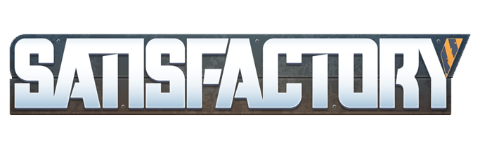

AeroSub Satisfactory
Purpose
The purpose of these websites is to share the love of the game "Satisfactory" to all that are interested. My gamer tag is AeroSub, and I would like you to come along with me and understand about my experience with this great game.
I hope that you will explore these websites to your hearts content. I do feel that anyone can get into Satisfactory and play it to find joy.
This was made for WDD 131: Dynamic Web Fundamentals class.
Plan
This website is split into four parts
- This home page to help you understand a little about why this website was made.
- An about page of the computer game Satisfactory.
- A review page with my personal review of the game.
- A history page concerning my history of factories that I have made within Satisfactory.
